腾讯 LEGO 百万行 C++ 实战：Harness Engineering 五层架构 + 多模型对抗式 CR
来源：微信公众号 归档日期：2026-04-21 抓取状态：成功 原文字符：13986｜配图：15 张
摘要速览
AI 编码在前端/客户端已被验证，但在"出事会炸"的后端系统里能用吗？腾讯 CDN LEGO（100万行C++、300万行改造第三方库、亿级用户、理论组合路径 13,824 × N 种）给出了一条完整路径：从"AI 能写"到"AI 写了敢用"。
核心内容
- 能力验证：20 天 Rust 零人工代码的 nonstop 项目
- 1人 + AI，20 天完成完整代理框架：L4/L7 代理、HTTP/3 QUIC、内置 WAF 纵深防御、V8 JS Workers 边缘计算，单二进制部署
- 实测：42,052 QPS / 5000 并发 0 错误 / P50 延迟 1.1ms / 6 层纵深防御
- 结论：AI 能力很强，但在大规模复杂系统里"敢不敢用"是另一个问题
- 57 个真实案例提炼的 13 类问题 + 5 大根因
最高风险：AI 不会说"我不知道"——用自信语气输出错误结论，反而降低人的审查意愿 Critical 级别：异步语义误用（blocking in tokio）、安全盲区（时序攻击/SSRF/JWT）、内存泄漏（DashMap只增不减）、协议实现不完整 根本原因：AI 缺乏"不确定性意识"和"全局视野"
- Harness Engineering 五层架构
核心理念：上下文 + 约束 + 反馈。将 AI 限制在单个模块/文件/函数内，构建有边界、有约束、有反馈的环境。
- Layer 1：权限安全基座
- Layer 2：代码规则即编译器（"禁止裸 new，必须 unique_ptr"比"写高质量代码"有效 100 倍）
- Layer 3：流程约束（测试 Task 阻塞后续，不可跳过）
- Layer 4：上下文体系（四层递进：Agent.md 项目宪法 → 安全纪律反例免疫 → 可复用模式库 → 专业 Skill）
- Layer 5：反馈闭环（九阶段全自动流水线，踩坑→规则→Skill 进化）
- 上下文三个关键实践
- RFC 本地化：AI 训练数据中的 RFC 可能过时（如 RFC 7230/7231 已被 9110/9112 取代），将 38,068 行 RFC 原文固化本地，AI 直接读取而非"回忆"
- 竞品调研 Agent 团队：3人天调研压缩至 1 天（RFC标准 + 竞品实现 + LEGO差异三问并行）
- 安全纪律用"反例免疫"：每条规则提供错误写法 + 正确写法，用错误示例教 AI "什么是错的"
- 多模型多 Agent 对抗式 CR
单模型 CR 有三大盲区：知识盲区（各模型训练数据不同）、注意力盲区（500+ 行 diff 后半段质量下降）、确认偏差（发现一类问题后忽略其他类型） 解法：Claude + Codex + Gemini 三模型并行独立审查 → cr_manager 汇总交叉验证 → cr_report.md 交叉验证逻辑：被两个以上模型同时发现 = 高置信度；单一模型发现 = 需要交叉轮验证
可执行启发
（待补充）
我的想法
（留给你补充）
为什么有用
这是目前见过的最硬核的 AI Coding 工程化落地案例——不是讲理念，而是 57 个真实踩坑 + 可复制的架构方案。对任何想在高风险系统里引入 AI 编码的团队，这五层架构和对抗式 CR 方案可以直接借鉴。特别是"不会说不知道是最高风险"这个洞察，直接影响 AI 代码审查策略。
具体步骤（Harness Engineering 落地路径）
- 先在低风险子系统做 AI 能力验证（如 nonstop），摸清能力边界和常见问题
- 建立问题清单（从真实案例提炼），分类为 Critical/High/Medium
- 搭建上下文体系：Agent.md 宪法 + RFC 本地化 + 反例免疫安全纪律 + 可复用模式库
- 设计约束：用结构化约束（编译规则/TaskList 阻塞）替代语言化期望
- 引入反馈闭环：Hook 自动采集 + 踩坑日志 + CLAUDE.md 内联反馈
- 部署对抗式 CR：多模型并行 + 交叉验证
适用 / 不适用场景
- 适用：大规模高可靠后端系统（C++/Rust）、容错度低的核心链路、需要可审计 AI 输出的团队
- 不适用：快速原型/一次性脚本（五层架构成本高于收益）
原文沉淀
目录
- 引言
- 一、背景与挑战
- 1.1 项目规模与复杂性
- 1.2 开发和运营痛点
- 二、 行业现状与能力验证nonstop项目
- 2.1 AI Coding 的冲击已经到来
- 2.2 20 天AI实现Rust零人工代码开发nonstop项目
- 三、核心问题：AI Coding在大型项目里为什么容易翻车？
- 3.1 AI Coding的常见问题
- 3.2 AI Coding的问题根因分析
- 四、LEGO AI Coding实践：Harness Engineering架构
- 4.1 Harness Engineering 的核心理念
- 4.2 LEGO Harness Engineering五层架构设计
- 五、三大实践抓手
- 5.1 LEGO上下文建设---消除 AI 的"记忆偏差"
- 5.1.1让AI“理解”项目和需求
- Agent.md（项目宪法）：项目结构即上下文，架构模式即约束，内联反馈注释
- 专业 Skill：覆盖友商实现、协议 RFC、开源代码等领域知识
- 5.1.2建立多竞品调研和协议安全 Agent团队
- RFC怎么说？（标准规范）
- 业界怎么做？（最佳实践）
- LEGO有什么差别？（定制化需求）
- 5.2 约束
- 5.3反馈
- 5.3.1从需求到研发测试的全AI自动化流水线
- 5.3.2多模型多Agent对抗式CR
- 模型并行独立审查
- 汇总问题并交叉验证
- 对争议问题进行辩论式讨论（同意/反对/维持）
- 全员无新发现时自动收敛
- 六、LEGO-Harness Engineering实践案例
- 6.1 案例：cpuinfos读写竞争修复
- 6.2 阶段性收益~效率提升20%
- 七、先行性差异化探索和挑战
- 八、AI Coding时代--后台开发的角色演变和团队建设思考
- 8.1 角色的重新定义
- 8.2 能力转型的四个维度
- 8.3 团队建设的渐进路径
- 8.4 实践态度的三重奏
- 结语

作者：lancelotluo
引言
当 AI Coding 的聚光灯几乎全部打在前端和客户端——生成一个页面、写一个 App......的时候，一个重要的问题却似乎被回避了：AI 能在真正"出事会炸"的后端系统里写代码吗？
腾讯CDN LEGO项目就是这样一个系统。100万行核心代码、300万行深度改造的第三方库，服务亿级用户，承担流量调度、协议解析、安全防护、缓存加速等关键职责。它面对的不是确定性的输入输出，而是不可控的客户端、不可控的源站、多协议、多配置、公网全量攻击面——这些因素维度的叠加不是简单相加，而是乘积式的复杂度爆炸，理论组合路径高达 13,824 × N 种。在这样的复杂的系统里让 AI 写代码，一行失误就可能是一场全网事故。
但正因为难，才值得做。 我们系统性地探索了 AI Coding 在高风险后端场景的落地路径：一方面，用 AI 零人工代码实现了一个 Rust 版 Nonstop 代理框架，以此探测 AI 编码的能力边界与行为特性；另一方面，在超大规模 C++ LEGO项目中构建了 Harness Engineering 五层架构和多模型对抗式CR，为 AI 产出的每一行代码建立从生成到上线的完整质量屏障。本文不仅是一份将 AI Coding 引入腾讯CDN核心框架的实战记录，更是一条从"AI 能写"到"AI 写了敢用" 的完整工程路径。
一、背景与挑战
1.1 项目规模与复杂性
LEGO系统作为腾讯CDN的核心接入层，承载着腾讯几乎所有CDN和EdgeOne业务流量的大型分布式系统，对可靠性、可用性、安全性的要求极高：
● 代码规模：核心代码超过100万行，采用多线程全异步非阻塞架构设计，要求开发人员对异步编程、并发控制、资源管理等技术领域有深入的理解
● 第三方依赖：深度改造第三方库超过300万行（包括OpenSSL、QUIC、LUA、JavaScript等），进一步增加了系统的复杂度
● 服务规模：每天处理的请求量以万亿计，服务于腾讯CDN的亿级用户，任何性能问题、稳定性问题或安全漏洞都可能被迅速放大
1.2 开发和运营痛点
LEGO最大的挑战就是面对不可控的客户端和不可控的源站。
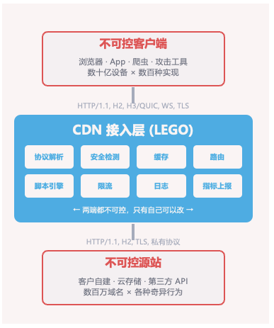
不可控因素众多：
● 客户端：浏览器、App、爬虫、攻击工具，涵盖数十亿设备和数百种实现
● 源站：客户自建、云存储、第三方API，涉及数百万域名和各种行为
● 协议支持：HTTP/1.1、HTTP/2、HTTP/3/QUIC、WebSocket、TLS等多协议并存
异步编程复杂：
● Future/Promise链路长，涉及多个异步操作的串联和组合
● Lambda生命周期管理容易出错，可能导致内存泄漏、悬垂指针、资源竞争等严重问题
● 多线程并发场景下的状态同步和资源竞争处理困难
容错度低：
● 第一跳位置，无状态设计，流式处理方式
● 一旦某个请求的处理出现错误，很难有恢复的机会
● 任何错误都可能直接暴露给用户，直接影响用户体验
协议安全要求高：
● HTTP RFC协议合规性要求确保LEGO对HTTP协议的实现符合标准
● 缓存安全机制防止恶意用户利用缓存机制发起攻击
● 注入攻击防护需要识别和拦截各种注入攻击，包括SQL注入、XSS攻击等
维度组合复杂性：
| 维度 | 数量 | 说明 |
|---|---|---|
| 请求协议 | 3种 | HTTP/1.1, HTTP/2, HTTP/3 |
| 回源协议 | 2种 | HTTP/1.1, HTTP/2 |
| TLS版本 | 4种 | 不同版本的TLS协议 |
| 缓存状态 | 4种 | 不同的缓存策略 |
| 域名配置 | 百万种 | 不同客户的域名配置 |
| 脚本逻辑 | 4种 | 不同的脚本处理逻辑 |
| 安全规则 | 4种 | 不同的安全策略 |
| 源站行为 | 5种 | 不同源站的响应行为 |
| 客户端行为 | 3种 | 不同客户端的请求模式 |
用户敏感度高：
● 对延迟极其敏感
● 状态码和网络波动会直接被用户感知
● 服务质量的要求更加严格
正如文章开头就提及的项目复杂度理论组合路径高达 13,824 × N 种。在这样的系统里用 AI 写代码，一旦放任，风险极高。所以LEGO团队的答案是：不是"用 AI"，而是"驾驭 AI"——这就是 Harness Engineering 的起点。
二、 行业现状与能力验证nonstop项目
2.1 AI Coding 的冲击已经到来
AI Coding的行业案例正在密集出现，预示着AI 已能参与真实的大规模工程。
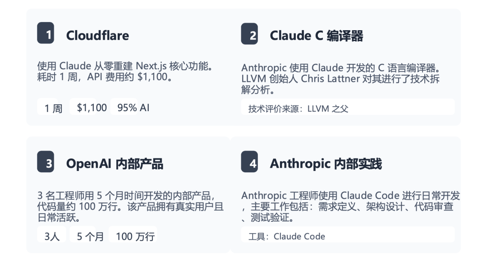
这些行业案例的输出结果虽然亮眼，但适不适合超大规模同时充满不确定性的后端系统，能在多大程度上解决我们生产环境中的实际问题，还是需要我们亲自实践。
2.2 20 天AI实现Rust零人工代码开发nonstop项目
所以，我们用20 天实现AI Rust零人工代码开发nonstop代理框架项目，探测 AI 编码的能力边界与行为特性，同时也给我们提供了许多实操经验。
nonstop项目是一个面向复杂生产环境的现代代理系统，设计目标是提供高性能、高可用、高安全的代理服务。与传统的代理服务不同，nonstop 在设计之初就将 AI Coding 作为核心开发方法，旨在验证 AI 在系统级编程中的能力。
其核心特性：
● 功能全面：支持L4/L7代理，满足不同场景的代理需求
● 协议先进：支持HTTP/3和QUIC协议，提供更快、更可靠的数据传输体验
● 安全防护：内置WAF（Web应用防火墙）纵深防御机制，识别和拦截各种Web攻击
● 边缘计算：集成V8 JavaScript引擎，支持JS Workers边缘计算能力
● 部署便捷：单二进制部署，支持零停机热加载，运维简单灵活
nonstop的设计理念是"永不停服"，意味着系统的可用性是第一优先级。通过精心设计的架构和容错机制，nonstop能够在各种异常情况下保持服务可用，不会因为单点故障或配置变更而中断服务。这种设计理念与CDN业务的高可用要求高度契合。
nonstop 项目成果数据：
1）在 20 天内由 1 人 + AI 开发团队完成，交付规模：
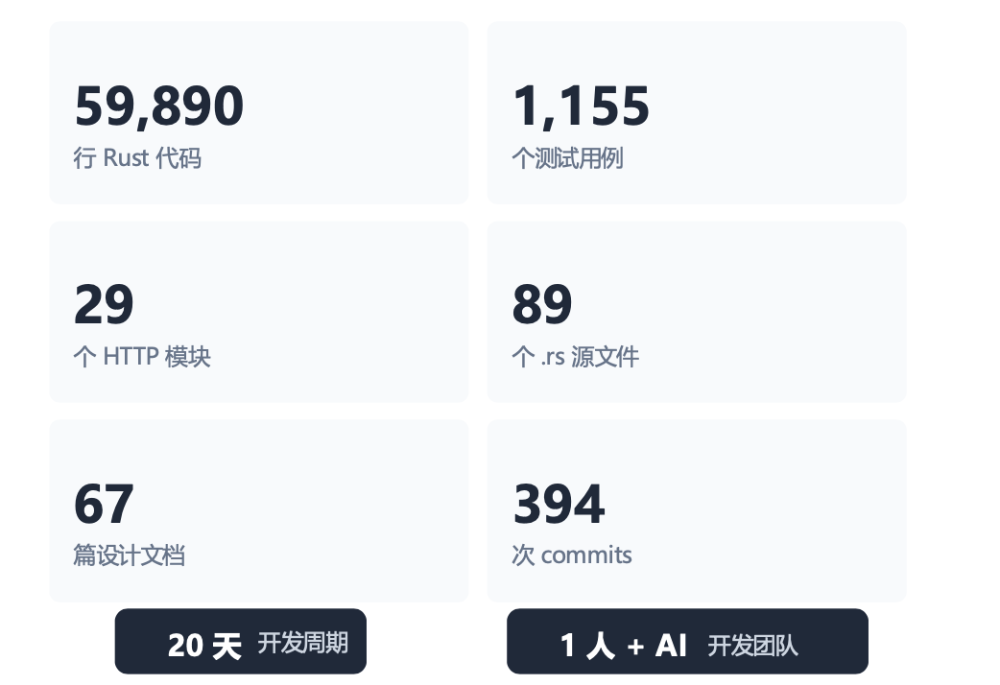
2）产品能力： 支持 L4/L7 代理、HTTP/3 QUIC、内置 WAF 纵深防御、V8 JS Workers 边缘计算，单二进制部署，零停机热加载。实测：42,052 QPS / 5000 并发 0 错误 / P50 延迟 1.1ms / 6 层纵深防御。
完成nonstop项目后，我们有惊喜更有疑问。惊喜的是AI能力确实很强，但同时也发现了很多问题：尤其是LEGO这样百万行级、高可靠的 C++ 系统，能不能"放心用"，会不会翻车？ 也是 Harness Engineering要解决的核心命题。
三、核心问题：AI Coding在大型项目里为什么容易翻车？
尽管nonstop让我们探测出 AI 编码的能力边界与行为特性，但在实际应用AI Coding的过程中，我们也发现了许多问题和挑战。
3.1 AI Coding的常见问题
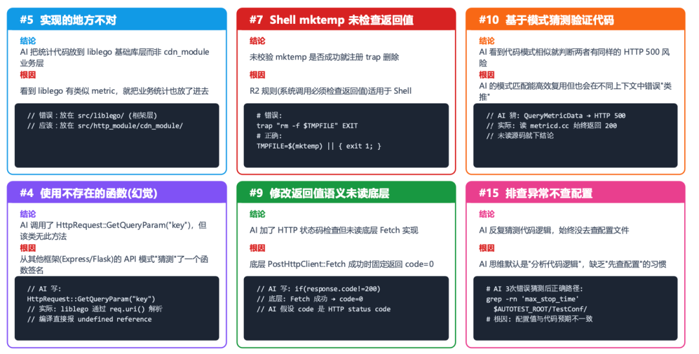
3.2 AI Coding的问题根因分析
在项目实际应用AI Coding的过程中，我们也发现了许多问题。基于57个真实案例，我们深入分析提炼出13类典型问题和5大根因，建立了系统化的问题认知框架，以及相应的预防和应对机制。
问题清单：这些问题在我们的实际项目中反复出现，建立问题清单有助于我们在使用AI Coding时提前识别和规避这些风险。
| 序号 | 问题类型 | 严重程度 | 来源 |
|---|---|---|---|
| 1 | 异步语义误用（blocking send in tokio） | Critical | nonstop |
| 2 | 幻觉（调用/配置不存在的 API） | High | 两项目 |
| 3 | 改不全（insert 无 cleanup） | High | 两项目 |
| 4 | 配置与实现脱节 | High | nonstop |
| 5 | 安全盲区（时序攻击/SSRF/JWT） | Critical | nonstop |
| 6 | 测试 Flaky（平台差异） | Medium | nonstop |
| 7 | 内存泄漏（DashMap 只增不减） | Critical | nonstop |
| 8 | 协议实现不完整 | Critical | nonstop |
| 9 | 底层未读就改上层 | High | LEGO |
| 10 | 源码分析替代实测 | High | LEGO |
| 11 | 大文件编辑损坏 | Medium | nonstop |
| 12 | 环境盲区 | Medium | LEGO |
| 13 | 不会说"我不知道" | 最高 | LEGO |
针对上述分析，AI Coding 在大型项目中的常见问题主要源于：
● 不会说"我不知道"：这是最高风险——AI 会用自信的语气输出错误结论，反而降低人的审查意愿
● 幻觉：编造函数签名、编造 RFC 章节号、编造百分比数据
● 改不全：局部修改，遗忘全局影响（insert 了却没有 cleanup）
● 模式匹配代替验证：代码相似就推断行为相同，跳过实测
● 缺乏环境意识：不区分容器/宿主机，不查配置直接猜
根本原因：AI 缺乏"不确定性意识"和"全局视野"。所以，接下来我们需要针对性地解决这两个问题。
四、LEGO AI Coding实践：Harness Engineering架构
基于上面的系统性分析研究和项目工程实战，我们已确认LEGO的项目是可以由AI来写，但LEGO项目存在一定复杂度和风险。所以，我们希望不是"用 AI"，而是"驾驭 AI"——这也是我们 Harness Engineering 的实践的起点。
4.1 Harness Engineering 的核心理念
首先我们梳理出一个理念：将 AI 尽量 harness 在单个模块、单个文件、单个函数内实现。
核心是：上下文、约束和反馈。
LEGOHarness Engineering 不是简单地"给 AI 加规则"，而是构建一套系统——让 AI在有边界、有约束、有反馈的环境中持续、可靠、高质量地交付代码。
4.2 LEGO Harness Engineering五层架构设计
基于这个核心思想，我们设计了LEGO Harness Engineering五层架构。这五层架构围绕"上下文、约束和反馈"三大核心要素构建，形成了一个完整的闭环系统。
各层职责：
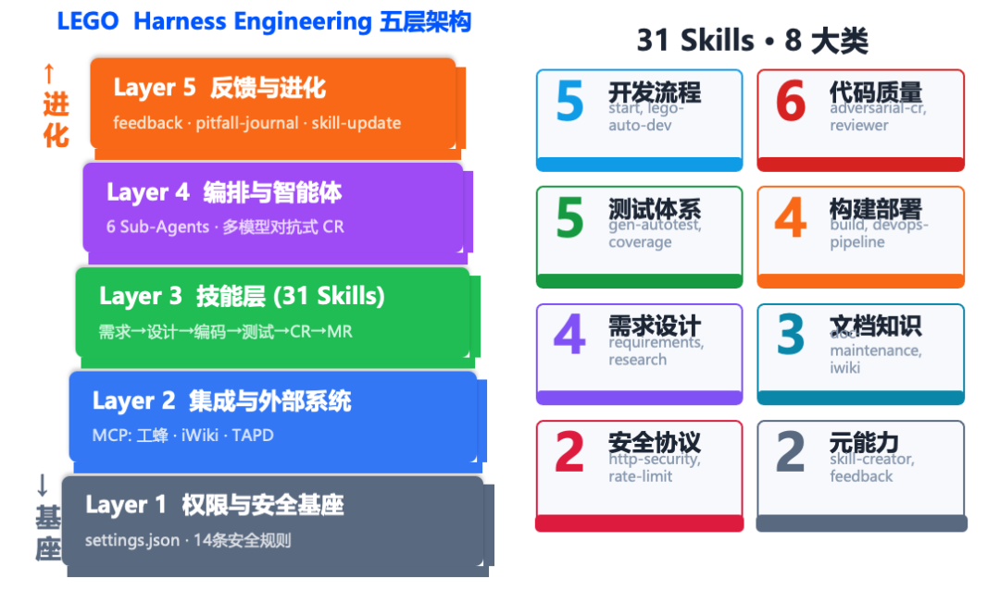
工程体系才是核心资产，而不是某个模型或 prompt。Skill 每天在更新，大模型在进化，但工程体系的价值持续积累。
五、三大实践抓手
5.1 LEGO上下文建设---消除 AI 的"记忆偏差"
5.1.1让AI“理解”项目和需求
LEGO 构建了四层递进的上下文体系，从项目宪法到领域专家知识，覆盖了 AI 在 CDN 和 EO 项目中工作所需的全部知识。
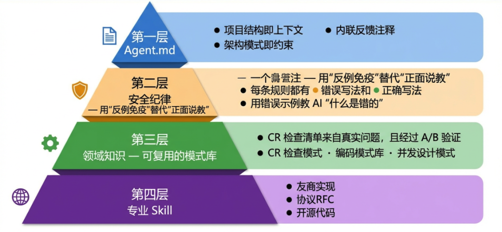
Agent.md（项目宪法）：项目结构即上下文，架构模式即约束，内联反馈注释
安全纪律：用"反例免疫"替代"正面说教"，每条规则都有错误写法和正确写法，用错误示例教 AI "什么是错的"
领域知识（可复用模式库）：CR 检查清单来自真实问题且经过 A/B 验证，涵盖 CR 检查模式、编码模式库、并发设计模式
专业 Skill：覆盖友商实现、协议 RFC、开源代码等领域知识
AI 训练数据中的 RFC 可能已经过时（如 RFC 7230/7231 已被 9110/9112 取代），引用时还可能混淆章节号。LEGO 的解法：将 38,068 行 RFC 原文固化在本地，AI 通过直接读取而非"回忆"来引用协议标准。
5.1.2建立多竞品调研和协议安全 Agent团队
在AI Coding过程中，上下文信息的质量至关重要。为了让AI做出正确的技术决策，我们需要为它提供充分的上下文信息。为此，我们建立了竞品调研Agent团队，负责为AI提供业界最佳实践和竞品实现的信息。
技术决策三问：
RFC怎么说？（标准规范）
业界怎么做？（最佳实践）
LEGO有什么差别？（定制化需求）
传统做法的局限性：
人类工程师花1-2天读RFC文档；花1天翻阅Nginx源码；花几天对比竞品实现；然后才能编写技术方案，整个流程耗时且容易遗漏关键信息。
LEGO的解决方案：组建Agent团队，实现自动化、结构化、并行化调研
● 竞品调研Agent团队架构：
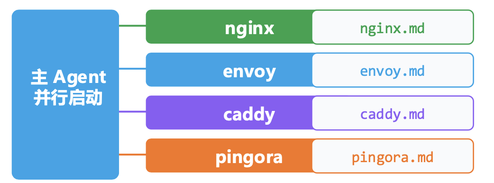
● 协议安全测试Agent团队
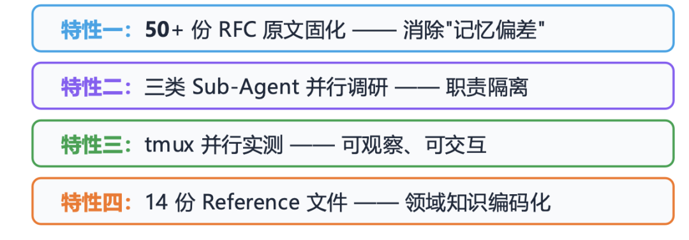
知识工程进化：通过三个维度的持续迭代提升Agent能力
| 维度 | 内容 | 作用 |
|---|---|---|
| 运营数据 | 实际生产环境的问题反馈和经验积累 | 了解真实的安全攻击场景和手法 |
| 专家思维 | 资深工程师的经验法则和最佳实践 | 提供常见的安全漏洞模式和编码规范 |
| 行业规则 | 协议安全和网络安全领域的通用规则和标准 | 提供权威的安全知识来源 |
协议安全测试Agent专注于安全防护的深度验证，确保每个协议实现都符合安全标准和防护要求。
最终主 Agent 同步分析 LEGO 源码，交叉验证，将原本需要3 人/天的调研压缩至1天。
5.2 约束
核心原则：用结构化约束替代语言化期望，让 AI"不敢"犯错。
三层约束架构
● Layer 1：权限安全基座
● Layer 2：代码规则即编译器
● Layer 3：流程约束——测试不可跳过（功能实现 → 单元测试 → 代码审查，严格阻塞顺序）
Task: 功能实现
└─ blocks: [单元测试]
← 测试 Task 被功能 Task 阻塞
Task: 单元测试
├─ blockedBy: [功能实现]
│ ← 功能完成后才能写测试
├─ blocks: [代码审查]
│ ← 测试完成后才能审查
Task: 代码审查
└─ blockedBy: [功能实现, 单元测试]
← 两个都完成才能审查五条核心约束（每条约束都来自真实踩坑）
| 序号 | 约束 | 踩坑来源 |
|---|---|---|
| 1 | 单项目调研：每次只调研一个竞品 | 多竞品混合分析时 C 和 C++ 代码模式互相干扰 |
| 2 | 严禁网络操作 | AI 联网搜索时返回的竞品信息可能过时或不准确 |
| 3 | 本地不存在则跳过 | 无源码时 AI 用训练数据编造了"源码分析" |
| 4 | 不修改 lego_server 代码 | 职责隔离：调研 Agent 不能有副作用 |
| 5 | 严格搜索范围 | 防止 Agent 在系统目录或 LEGO 目录中搜索污染分析结果 |
明确的约束比模糊的期望更有效
| 方式 | 示例 | 效果 |
|---|---|---|
| ❌ 期望 | "写高质量的代码" | AI 理解模糊，输出不稳定 |
| ✅ 约束 | "禁止裸 new，必须 unique_ptr" | AI 100% 遵循 |
| ❌ 期望 | "注意并发安全" | AI 可能遗漏 |
| ✅ 约束 | "热路径禁止全局 mutex，用 per-thread 或分片锁" | AI 生成时自动规避 |
| ❌ 期望 | "记得写测试" | 8 个 Agent 忘了测试 |
| ✅ 约束 | TaskList 中测试 Task 阻塞后续流程 | 不可能跳过 |
约束还延伸至多模型多 Agent 对抗式 CR，通过并行独立审查，cr_manager 汇总出 cr_report.md，实现交叉验证，解决单模型的知识盲区、注意力盲区和确认偏差三大问题。
5.3反馈
5.3.1从需求到研发测试的全AI自动化流水线
核心理念：反馈速度决定进化速度，实时反馈能让输出质量翻 2-3 倍
一条命令驱动的 9 阶段全自动流水线
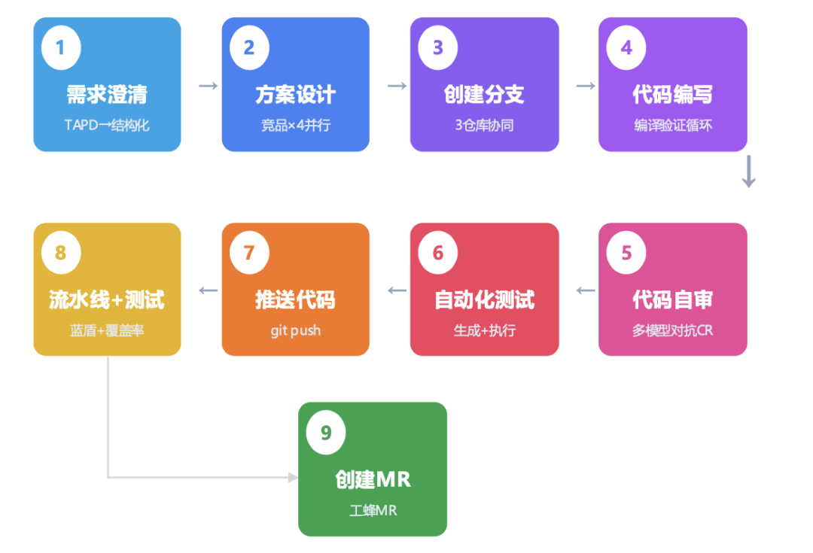
LEGO 建立了三条并行的反馈通道：
● 通道 1：自动采集（Hook）
● 通道 2：踩坑日志（Pitfall Journal）
● 通道 3：：**.md 内联反馈
踩坑 → 规则 → Skill 的进化闭环
真实踩坑 (PIT-001: mmap 检查 nullptr)
↓
安全规则 (R2: 系统调用返回值)
↓
CR 检查清单 (review-patterns.md)
↓
A/B 实验验证效果
├→ 确认有效 → 保留
└→ 效果有限 → 标注"通用知识可覆盖"实际案例
● PIT-001 (mmap nullptr→SIGSEGV) → 写入 R2 规则 → AI 自动使用 MAP_FAILED
● 问题 9 (未读底层就改上层) → Pattern #8 → A/B 验证显著 → 保留
● 问题 23 (无源码时编造分析) → 更新 competitor-researcher Skill
5.3.2多模型多Agent对抗式CR
单模型CR的三个盲区：
| 盲区类型 | 表现 | 根因 |
|---|---|---|
| 知识盲区 | 每个模型的训练数据不同，对特定框架/模式的理解有差异 | 更懂Seastar异步模式和系统调用约定 |
| 注意力盲区 | 大diff下模型会"聚焦"于某些区域而忽略其他 | 上下文窗口有限，500+行diff时后半部分审查质量下降 |
| 确认偏差 | 单模型发现一个问题后，倾向于沿同一方向继续找 | 发现了内存安全问题后，可能忽略配置兼容性问题 |
对抗式CR的核心思想：
模型A独立审查 → 发现问题集{a1, a2, a3}
模型B独立审查 → 发现问题集{b1, b2, a2}
模型C独立审查 → 发现问题集{c1, a1, b1}交叉验证：
● a2被A和B同时发现 → 高置信度
● a1被A和C同时发现 → 高置信度
● b1被B和C同时发现 → 高置信度
● a3只有A发现 → 需要在交叉轮中验证
● c1只有C发现 → 需要在交叉轮中验证
对抗式CR的架构和流程：
模型并行独立审查
汇总问题并交叉验证
对争议问题进行辩论式讨论（同意/反对/维持）
全员无新发现时自动收敛
对抗式CR与业界对比分析
| 维度 | GitHub Copilot CR | OpenAI Codex Review | LEGO对抗式CR |
|---|---|---|---|
| 模型数 | 1 | 1-2 | 3 |
| 执行方式 | 串行单次 | 串行两次 | 并行+交叉迭代 |
| 交互方式 | 静态扫描 | 静态扫描 | 辩论式（同意/反对/维持） |
| 收敛机制 | 无（一次性） | 固定轮数 | 全员无新发现自动收敛 |
| 容错 | 失败则无结果 | 失败则无结果 | 部分模型失败仍可产出 |
| 审查标准 | 通用 | 通用 | 项目定制P0-P3+review-patterns |
LEGO的对抗式CR通过多模型并行审查和交叉验证，能够发现更深层的问题；通过辩论式讨论，能够更深入地理解问题的本质；通过自动收敛机制，能够在保证质量的同时提高效率。
六、LEGO-Harness Engineering实践案例
确定了3个抓手之后，我们快速进入整体的工程落地中，这里具体分享具体实践案例。
6.1 案例：cpuinfos读写竞争修复
背景：发现cpuinfos存在多线程读写竞争问题，需要修复以确保系统稳定性
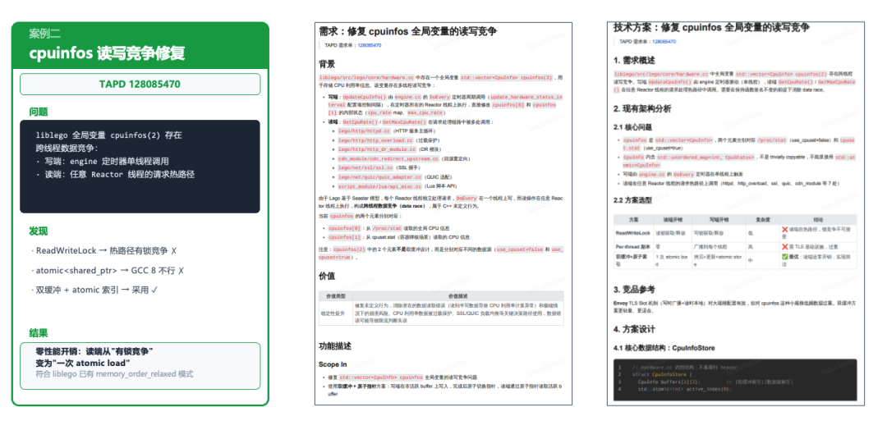
实践过程：
● 通过对抗式CR快速定位问题根源
● AI生成修复方案和测试用例
● 自动化验证修复效果
成果：
● AI 系统性对比三种方案（ReadWriteLock / atomic<shared_ptr> / 双缓冲+atomic 索引）
● 成功修复了读写竞争问题
● 最终采用零性能开销方案，开发时间从 5 天压缩至 1 天，
● 但暴露出方案未考虑线程初始化的问题，非最优解，需要后续优化
6.2 阶段性收益~效率提升20%
通过Harness Engineering的实践，LEGO项目在初期就获得了显著收益，综合效率提升20%。也稍做解释，虽然在局部环节（比如调研、开发）的提速幅度远不止于此可能达数倍，但 AI 的执行结果仍需人工 Review，同时对研发同学尤其是新人也需要时间成本熟悉学习这套体系——将 Review 成本与学习曲线一并纳入后，最终综合提升约为 20%。
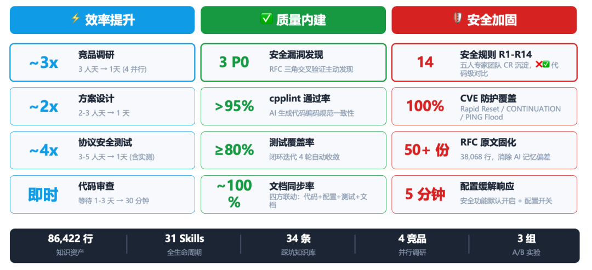
| 维度 | 提升幅度 |
|---|---|
| 竞品调研 | 3 人天 → 1 天（~3x） |
| 方案设计 | 2-3 人天 → 1 天（~2x） |
| 协议安全测试 | 3-5 人天 → 1 天（~4x） |
| 代码审查 | 等待 1-3 天 → 30 分钟 |
| cpplint 通过率 | >95% |
| CVE 防护覆盖 | 100% |
知识资产方面：86,422 行代码、31 个 Skill、34 条踩坑规则、4 竞品并行调研，3组A/B实验 持续积累。
七、先行性差异化探索和挑战
当前，LEGO已经进入了"落地 + 量化验证 + 持续迭代"的成熟阶段。在这一过程中，我们进行了大量的先行性探索：
● 模型能力边界：深入了解AI在不同场景下的能力局限
● 效果评测：建立量化的效果评估体系
● 最佳实践沉淀：将成功经验固化到流程中
与业界实践的差异化对比
| 维度 | 业界典型水平 | LEGO实践 | LEGO的差异化 |
|---|---|---|---|
| 规则验证 | 改了harness跑benchmark | 单变量A/B实验 | 知道哪条规则有用 |
| 多模型对抗CR | 两模型串行review | 三模型并行+交叉迭代+自动收敛 | 更深的缺陷发现 |
| 问题归因 | 散点经验分享 | 34问题×5根因×代码对比 | 系统性知识库 |
| 跨会话上下文 | prompt caching/文件记忆 | TAPD目录结构化存储 | 多Agent共享上下文 |
| 测试闭环 | 生成→运行 | 生成→运行→覆盖率→补全→收敛 | 完整闭环 |
| 反馈时效 | 事后回顾（天/周级） | 实时Hook+当天日志+永久规则 | 三时间尺度覆盖 |
同时我们也发现一些问题：
误报率 36%：9 个代码问题中真实 P0 仅 1 个
文档爆炸：8 个需求生成 99 个文件，人难以全部确认
AI 的"自信"会传染：格式工整的文档反而降低审查意愿
团队能力退化风险：AI 用多了，工程师的专业和文档能力可能下滑
这些都是在 Harness Engineering实践中需要持续应对的真实挑战。
八、AI Coding时代--后台开发的角色演变和团队建设思考
在AI Coding时代，后台开发工程师的角色正在发生深刻变化：
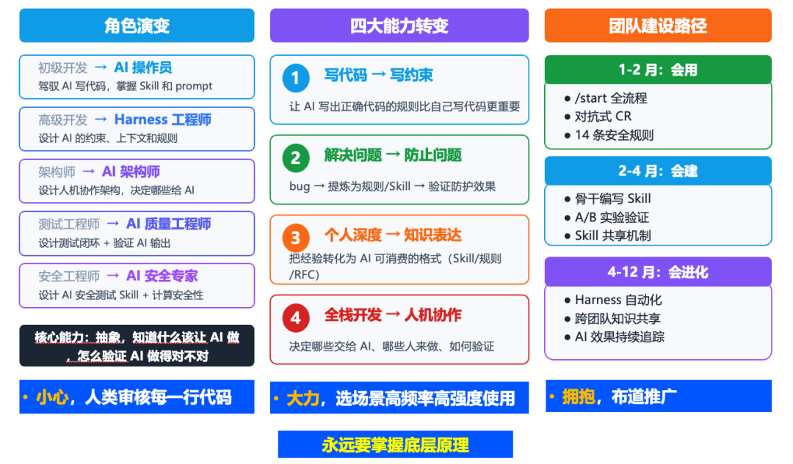
8.1 角色的重新定义
过去我们熟悉的职能边界正在松动。
初级开发：不再只是敲代码的执行者，而是进化为能够驾驭 AI 写代码的操作员，掌握 Skill 与 Prompt 成为新的基础技能；
高级开发：升维为 Harness 工程师，核心工作是设计 AI 的约束、上下文与规则，让 AI 在可控轨道上高效运转；
架构师：重心从系统设计转向人机协作架构，真正的判断力体现在"哪些交给 AI、哪些必须人来把控"；
测试和安全工程师：分别演变为 AI 质量工程师与 AI 安全专家，前者设计测试闭环以验证 AI 输出，后者构建 AI 安全测试 Skill 并纳入计算安全性考量。
这一切变化背后，有一个不变的核心能力：抽象思维——知道什么该让 AI 做、如何验证 AI 做得对不对。这是工程师在 AI 时代真正的不可替代性所在。
8.2 能力转型的四个维度
角色演变的背后，是工程能力体系的系统性重构：
- 写代码 → 写约束：让 AI 遵循正确规则写出正确代码，比自己手写更关键；
- 解决问题 → 防止问题：从 Bug 中提炼规则和 Skill，构建验证防护机制，将经验转化为护城河；
- 个人深度 → 知识表达：把个人积累的经验转化为 AI 可消费的格式（Skill 规则 RFC），实现知识的乘数效应；
- 全栈开发 → 人机协作：核心决策变为——哪些任务交给 AI、哪些人来兜底、结果如何验证。
8.3 团队建设的渐进路径
团队的 AI 能力建设不能一蹴而就，而应遵循会用 → 会建 → 会进化的三段节奏：
● 第 1-2 月（会用）：推动全员掌握 /start 全流程、对抗式 Code Review 和 14 条安全规则，打牢使用基础；
● 第 2-4 月（会建）：骨干成员开始编写团队专属 Skill，通过 A/B 实验验证效果，建立 Skill 共享机制，形成团队智慧沉淀；
● 第 4-12 月（会进化）：迈向 Harness 自动化，推动跨团队知识共享，持续追踪 AI 使用效果，构建自我迭代的 AI 协作飞轮。
8.4 实践态度的三重奏
面对 AI Coding，团队需要在三种态度之间保持清醒的平衡：
小心——人类必须审核每一行 AI 生成的代码，不能盲目信任；
大力——主动选择高频场景深度使用，不能浅尝辄止；
拥抱——积极布道推广，让 AI 能力成为团队文化的一部分。
而无论工具如何演进，永远要掌握底层原理——这是工程师在人机协作时代保持判断力与掌控感的终极压舱石。
结语
工程体系才重要。
AI Coding 不是"让 AI 替你写代码"，而是重新定义人与 AI 协作的工程范式。LEGO Harness Engineering 的价值不在于某次效率提升的数字，而在于：每一个踩坑变成规则，每一条规则内化进 Skill，每一个 Skill 让下一个人少走弯路——这是一套可持续进化的工程体系。


归属：[[02-输入/按主题/AI与效率/_index|AI与效率]]